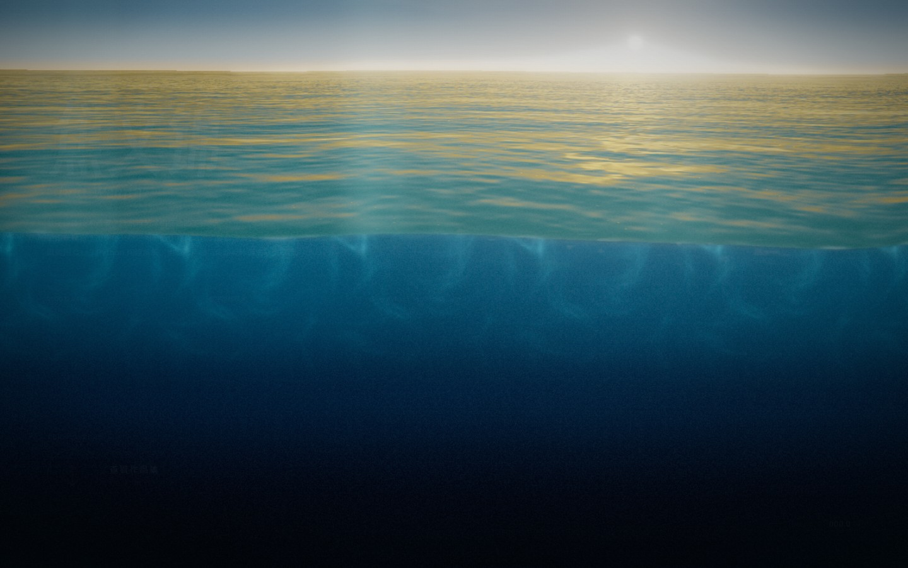
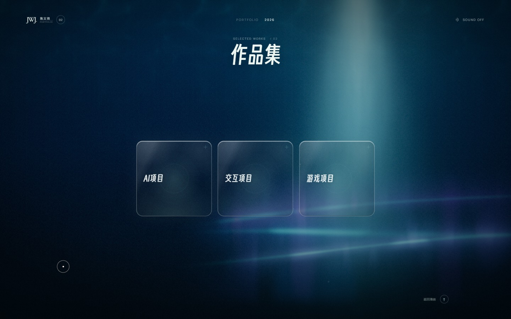
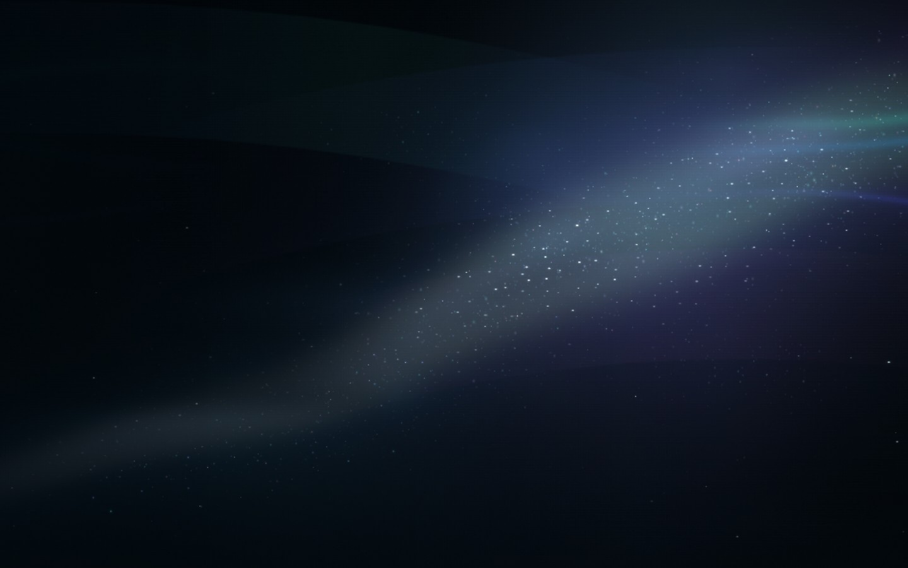

TYPOGRAPHY
潮汐Cosmos
中文使用高点、带速度感的展示字形；英文以高对比衬线承担电影感，数据与说明则退回克制无衬线。
INTERACTION / 01
返回作品集↗INTERACTION & VISUAL EXPERIENCE CASE 01
这不是三张被并排放在一起的页面，而是一段连续的镜头。
海面是起点，深水是作品所在，星河是创作没有边界的地方。
01 / CAMERA STUDY
同一套镜头状态，既能穿过海面进入星河，也能让星尘重新收束成光核，沿光柱返回水下。拖动、按键或选择方向，观察两条镜头如何共用一套物理。
05 / INTERFACE AS MATERIAL
字体、玻璃、色彩与光晕都来自同一套海洋／星尘物质语言。它们安静地承载内容，不抢占镜头。
作品索引
低饱和玻璃、细边框与局部高光，让背景仍然参与构图。
TYPOGRAPHY
中文使用高点、带速度感的展示字形；英文以高对比衬线承担电影感，数据与说明则退回克制无衬线。
COLOR SCRIPT
从暖金过渡到深青，再进入蓝紫与冷白。颜色不是装饰，而是镜头所在深度的温度。
RESTRAINT
不叠加水珠贴片、点击光圈和无来源的镜头光晕。每个发光元素都必须能回答：它来自哪里，为什么在这里。
06 / CRAFT & PERFORMANCE
电影感不能以卡顿为代价。主站以单一渲染循环组织海面、光柱与星尘，并把界面动画限制在合成层；设备性能变化时，质量在镜头稳定后自适应，而不在转场中途抖动。
镜头、深度、光与 UI 共用一条状态时间轴。
根据设备动态调整像素比与粒子密度，转场中冻结质量切换。
海面、水下与星河共享方向、光源与相机惯性。
键盘可操作，支持减少运动偏好，并保留完整内容层级。
02 / DESIGN PROPOSITION
“让浏览成为一次空间记忆：你能感到光从哪里来，也能记得自己如何回到海面。”
传统作品集用导航把经历切成条目。这里换一种方式：把身份、作品与想象放进同一片连续空间，让访问者沿着深度自然地遇见它们。
镜头是唯一的叙事主轴。滚动改变的不是页面位置，而是身体与光线的位置；界面不漂浮在场景之外，而像从海水、玻璃与星尘里生长出来。
海面、水下与星河共享一套空间坐标。向下滚动，就是镜头真正进入更深处。
太阳始终在画面右侧；水下光柱与暖金闪光是同一束光的延续，极光则作为独立的浪漫光源存在。
从星河返回海底不播放倒放，而是让光点重新汇成光束，沿着光柱把视线带回作品所在的位置。
03 / MOTION GRAMMAR
DESCENT / 下潜
入水点由海浪高度、镜头速度与水下折射共同决定。画面会短暂失焦、变冷、出现真实水线，再重新获得清晰度。
CONTINUOUSLIGHT / 光
暖金闪光服从太阳方位，水下体积光与海面反光保持一致；极光只作为深海的第二光源，在更深处提供色彩层次。
MOTIVATEDFLIGHT / 飞行
转场不使用遮罩切换。星群先被光柱遮挡，再绕到前景；镜头跟随它们向右上方加速，页面在黑场之前已经变成了星场。
FOLLOW CAMRETURN / 回程
星河粒子向一点汇聚，形成柔和的白色光核。光核悬停，光柱从上方落下，页面随光的降落重新显形，不产生生硬的缩放或闪切。
MOTIVATED CUT04 / THREE DEPTHS
每一幕都有自己的构图与界面密度，但镜头方向、光源逻辑和运动惯性始终连续。

SURFACE / 潮汐之上
开阔的海平线、右上方太阳与克制的个人信息。没有浮夸的卡片堆叠，只有足够多的留白，让名字、经历与进入作品集的意愿自然被看见。

UNDERWATER / 深蓝之下
水下作品索引悬浮在深蓝体积光中。高亮、透明、带真实反射的玻璃方块让内容保持轻盈，也把海水的流动留在界面背后。

COSMOS / 星河之中
光点从光柱后方生成，绕过遮挡后与镜头并行飞行。它们最终留在海底，组成深浅不一、远近有别的星河；页面就在这段飞行里自然完成转换。
THE EXPERIENCE CONTINUES
从海面到水下，再到星河，空间不断变深，视线也不断变远。
这座作品集想留下的，不是一次浏览，而是一种仍在向下、仍在向前的感受。